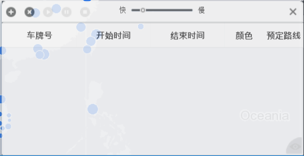
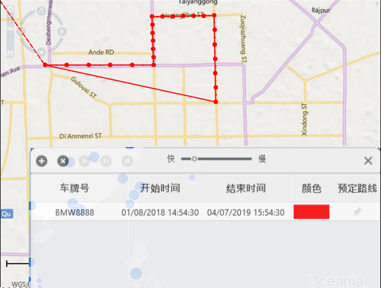
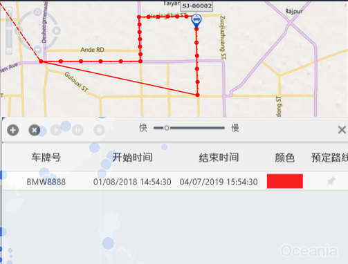

历史轨迹
指定历史轨迹查询的车辆及时间段，查询结果将通过列表显示轨迹数据，通过GIS窗口显示轨迹。
| 1. | 单击地图工具栏上的〖〗，打开历史轨迹设置窗口，如下图所示。

Fig 12 历史轨迹设置 |
| 2. | 单击〖 Fig 13 历史轨迹查询 |
| 3. | 输入“车牌号”。 |
| 4. | 设置时间范围（“开始时间”和“结束时间”）。 |
| 5. | 设置轨迹颜色。 在地图上，不同车辆和时间段的历史轨迹以颜色加以区分。
|
| 6. | 单击〖确定〗。 历史轨迹设置窗口中新增一条记录，地图上显示该车辆在指定时间段内的行驶轨迹。

Fig 14 历史轨迹
|
| 7. | 选择一条历史轨迹记录，单击〖 
Fig 15 历史轨迹播放 地图上将显示指定时间范围内车辆行驶的动态轨迹。
|